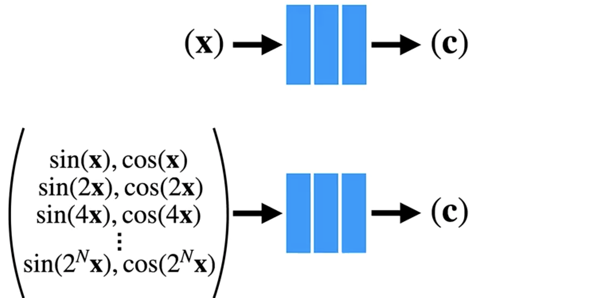

Summary of some papers
NeRF: Representing Scenes as Neural Radiance Fields for View Synthesis
Problem: Render photorealistic new images in the same scene with multiple images in the scene along with their corresponding camera poses.
Prior work:
- Predict 3D voxel RGB-alpha grid: discrete volumetric representation, and render new views by compositing along rays. The computational cost is high.
- Neural networks as a shape representation: represent shape as continuous functions, e.g., represent shape surface as level-set of a fully connected neural network. The entire representation is just network weights. The quality hasn't matched that of a voxel grid.
NeRF: neural network as a volume representation, using volume rendering to do view sythesis. The paper has the following key points:
- Continuous neural network as a volumetric scene representation (5D = xyz + direction)
- Use volume rendering model to synthesize new views
- Optimize using rendering loss for one scene (no prior training)
- Apply positional encoding before passing coordinates into network to recover high frequency details
Representing a scene as a continuous 5D function
Compared to discrete grid representation, neural network as scene representation is more computationally efficient.
Render models
To render the image, just query the network with a bunch of discrete points in each ray.
Composite the color and alpha of points along each ray to compute the output color for each pixel.
Viewing direction as input enables synthesizing novel views.
Rendering loss
The rendering loss is used to end-to-end optimized the network.
Positional encoding
Map each of the input coordinates to a higher dimensional space, encoding them with a sinusoids with exponentially increasing frequencies. 